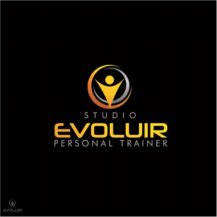

Sobre mim
Há 14 anos ajudando pessoas a emagrecer sem viver de dieta.
Comecei atendendo dentro de academias, ao lado de quem treinava firme e mesmo assim não via o corpo mudar. Depois vieram as clínicas de emagrecimento, onde conheci de perto quem já tinha tentado de tudo e sempre via o peso voltar.
Foi assim que aprendi o que funciona de verdade: o plano que dá resultado é o que cabe na sua vida. Por isso eu não entrego dieta pronta. Eu meço, explico os seus números e monto o plano com a comida que você gosta, ajustando a cada retorno até o resultado aparecer e ficar.
- Sem terrorismo nutricional. Nada de cortar tudo o que você gosta.
- Você entende o porquê. Explico seus exames e seus números em linguagem simples.
- Você não fica sem resposta. Dúvida no dia a dia? É só me chamar no WhatsApp.
Por onde passei em Araraquara
- Instituto Fritz · 2024 · 2026

Studio Evoluir · 2014 · 2020- Lipocenter · 2013 · 2016
- Olipo Fitness · 2013 · 2016
- Academia Arion · 2012 · 2014
@francianemarinnutricionista no Instagram